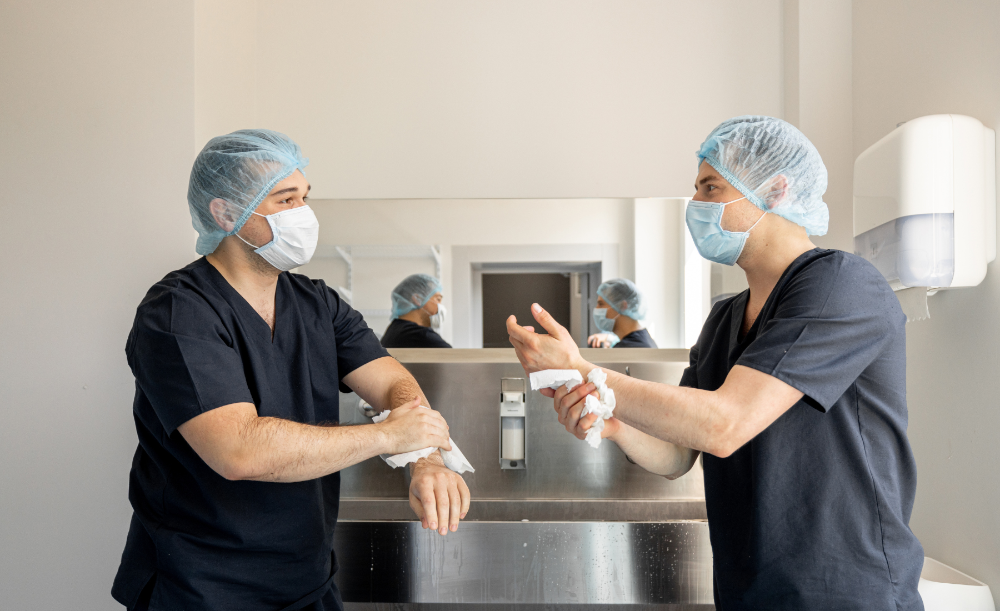
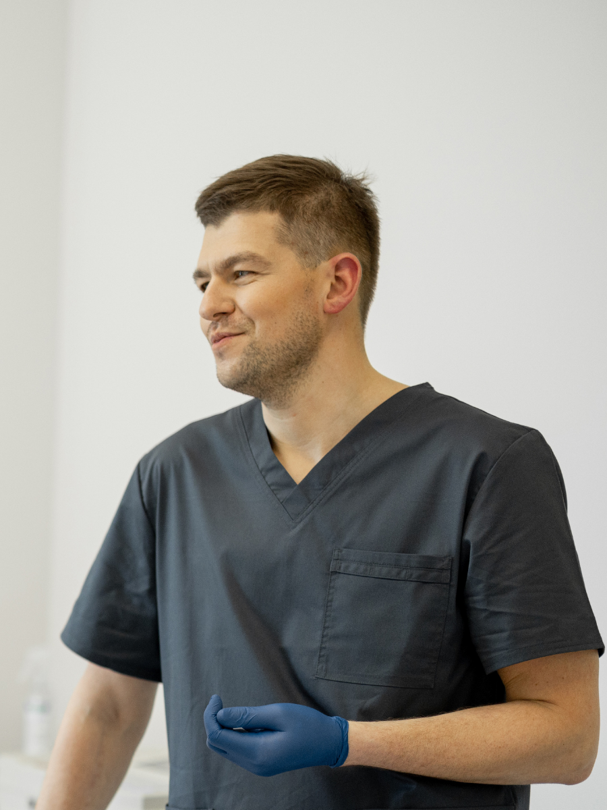
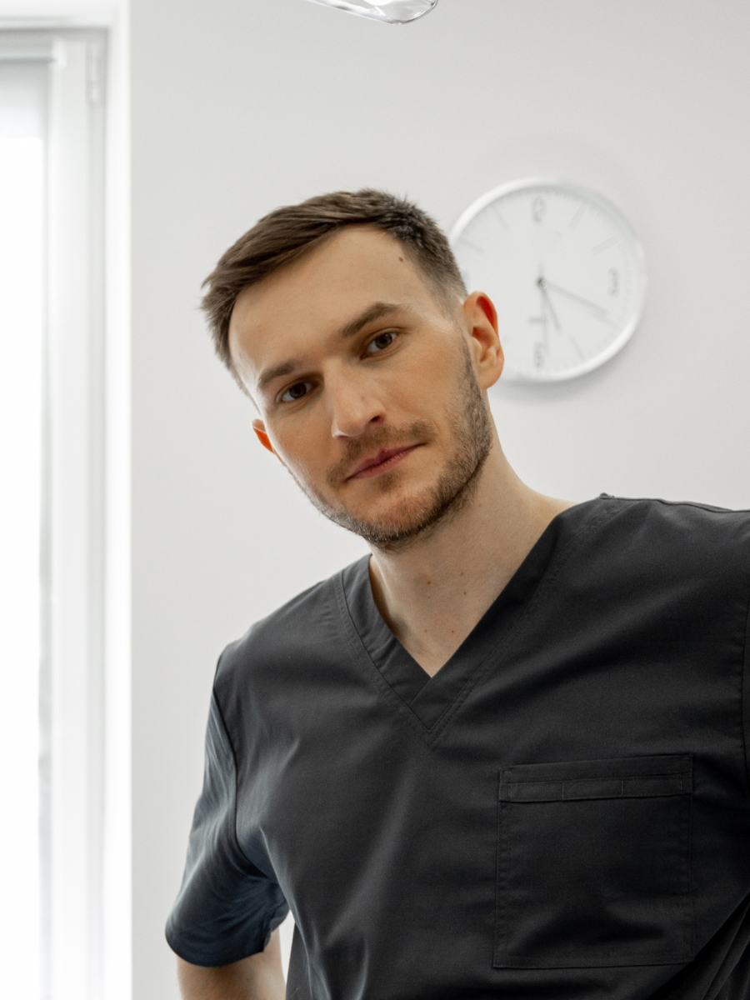

Le Dr Camille Vasseur et le Dr Thomas Rigaud unissent des expertises complémentaires — segment antérieur et segment postérieur de l'œil — pour une prise en charge complète, précise et humaine.

Cataracte · Chirurgie réfractive · Segment antérieur
Diplômée de la Faculté de Médecine de Lyon puis formée en chirurgie oculaire au CHU de Lyon, le Dr Vasseur s'est spécialisée dans la chirurgie de la cataracte par phacoémulsification et dans la correction des troubles réfractifs. Une pratique fondée sur la précision du geste et l'écoute des attentes visuelles de chaque patient.

Glaucome · Rétine · DMLA · Segment postérieur
Formé à Lyon puis à Paris en pathologies rétiniennes, le Dr Rigaud consacre sa pratique au dépistage précoce et au traitement du glaucome, de la DMLA et des atteintes de la rétine. Il privilégie une prise en charge préventive, appuyée sur des outils diagnostiques de dernière génération.
Des outils d'imagerie de dernière génération pour un diagnostic fiable dès la première consultation.
Chaque pathologie, chaque option thérapeutique est expliquée clairement, sans jargon inutile.
Des protocoles chirurgicaux éprouvés, pensés pour limiter la gêne et accélérer la récupération.
Un accompagnement resserré avant et après chaque intervention, jusqu'au retour à une vision confortable.